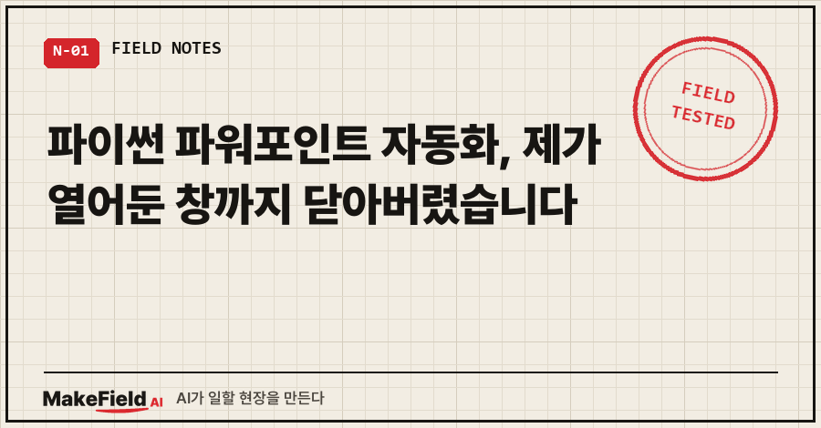
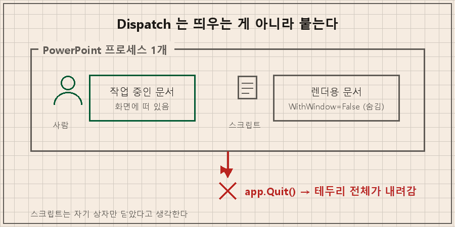
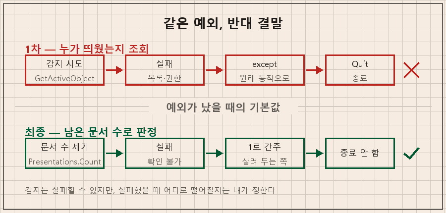
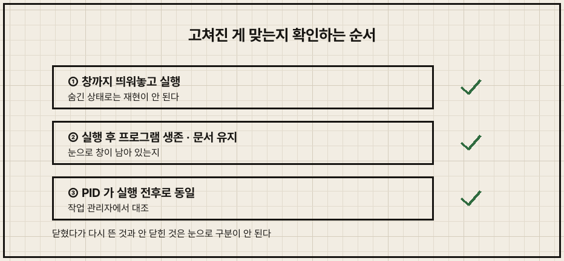

발표자료 한 개를 띄워놓고, 옆에서 렌더 스크립트를 돌렸어요. 슬라이드를 PNG로 뽑아서 눈으로 확인하는 용도입니다.
실행이 끝나자 제가 보고 있던 창이 같이 사라졌습니다.
파이썬 파워포인트 자동화가 남의 창까지 닫는 이유는 거의 마지막 줄 하나예요. 오피스 프로그램은 단일 인스턴스라서, 스크립트가 새 프로그램을 띄우는 게 아니라 이미 떠 있던 그 창에 그대로 붙습니다. 그 상태에서 app.Quit()을 부르면 내 문서만 닫히는 게 아니라 프로그램 전체가 내려가요.
2026년 9월에 겪은 일이고, 윈도우 + pywin32 + 파워포인트 조합입니다. 엑셀이나 워드로 같은 방식을 쓰고 계셔도 구조가 같아서 똑같은 자리에서 걸립니다.
저장은 해둔 상태라 파일은 멀쩡했어요. 다만 자동복구본도 안 남더라고요.. 프로그램이 정상 종료 절차를 밟았으니 파워포인트 입장에선 사고가 아니었던 겁니다.
왜 내 스크립트가 남의 창을 닫나요
Dispatch는 프로그램을 새로 띄우는 명령이 아니라 붙는 명령이기 때문입니다. 파워포인트가 이미 실행 중이면 그 인스턴스로 연결되고, 없으면 그때 하나 띄웁니다. 두 경우의 코드가 똑같이 생겨서 구분이 안 돼요.
제 코드는 이렇게 생겼습니다.
app = win32com.client.Dispatch("PowerPoint.Application")
pres = app.Presentations.Open(pptx_path, ReadOnly=True, WithWindow=False)
pres.Export(out_dir, "PNG", width, h)WithWindow=False까지 넣어서 화면에 안 보이게 열었으니, 저는 이게 백그라운드에서 조용히 도는 별개의 작업이라고 생각했어요. 실제로는 제가 보고 있던 그 프로그램 안에서 문서 한 개가 더 열린 것뿐이었습니다.
그리고 마지막 정리 구간에 이 줄이 있었어요.
finally:
pres.Close()
app.Quit() # ← 사고 지점 (수정 전)pres.Close()는 내가 연 문서만 닫습니다. 여기까지는 맞아요. 문제는 그다음 줄이 프로그램을 통째로 닫는다는 거였습니다. 내가 띄운 프로그램인지 아닌지 한 번도 확인하지 않고요.

처음 고친 방법은 왜 실패했나요
"내가 띄운 게 맞는지 먼저 물어보자"로 접근했고, 그 질문 자체가 답을 못 줬습니다.
떠 있는 인스턴스를 찾아내는 GetActiveObject라는 방법이 있어요. 이걸로 먼저 조회해서 "이미 누가 띄워놨다"가 나오면 종료를 건너뛰게 만들었습니다. 논리는 깔끔했는데, 실행하니 사용자 창이 또 닫혔어요.
조회가 실패하고 있었습니다. 실행 중인 프로그램이 조회용 목록에 등록돼 있지 않거나, 스크립트와 프로그램의 실행 권한이 달라서 서로를 못 보는 경우가 있거든요. 그 조회는 예외를 던지고 끝났고, 예외를 받은 코드는 원래 하던 일로 돌아갔습니다. 즉 Quit으로요.
여기가 이번 건에서 제일 뼈아팠던 지점이에요.
[1차 수정의 흐름]
① 떠 있는 인스턴스 조회 시도
② 조회 실패 (목록 미등록 · 권한 차이)
③ except 로 떨어짐
④ 원래 동작 = app.Quit() ← 고치기 전과 똑같은 결말감지 장치를 하나 붙였는데, 감지에 실패하면 보호가 사라지는 구조였던 겁니다. 안전장치가 작동하지 않은 게 아니라, 작동하지 않았을 때 어디로 떨어지는지를 제가 안 정해둔 거고요.

그래서 뭘로 바꿨나요
파이썬 파워포인트 자동화에서 종료를 안전하게 만드는 건 결국 판단 근거를 바꾸는 일이었어요. 누가 띄웠는지 묻는 걸 포기하고, 닫고 난 뒤에 남아 있는 문서 수를 세는 방식으로 바꿨습니다. 내 문서를 닫았는데도 열린 문서가 남아 있다면 그건 사람 것이니 프로그램을 건드리지 않는다, 한 개도 안 남았으면 내가 띄운 것이니 종료한다.
finally:
pres.Close()
try:
remaining = app.Presentations.Count
except Exception:
remaining = 1 # 확인 불가 시 살려 두는 쪽으로
if remaining == 0:
app.Quit()핵심은 except 안의 remaining = 1입니다. 문서 수를 세는 것마저 실패하면 "한 개 남아 있다"고 치고 넘어갑니다. 그러면 종료 조건에 안 걸려요. 최악의 경우 빈 파워포인트가 하나 떠 있게 되는데, 남의 작업 창이 닫히는 것보다는 그게 훨씬 낫습니다!
앞선 방법과 비교하면 이렇게 됩니다.
| 감지 방식(1차) | 문서 수 방식(최종) | |
|---|---|---|
| 판단 근거 | 누가 띄웠는지 조회 | 지금 몇 개 열려 있는지 |
| 조회 실패 시 | 예외 → 종료 실행 | 예외 → 종료 안 함 |
| 실패 자체 | 자주 발생(목록·권한) | 발생해도 결과가 안전 |
| 최악의 결과 | 사용자 창 닫힘 | 빈 프로그램 하나 남음 |
제 일은 현장 설비 쪽인데, 15년 하면서 이 표를 다른 이름으로 계속 봤어요. 신호가 끊겼을 때 밸브를 열린 채로 둘지 닫힌 채로 둘지 정해두는 것 말입니다. 센서가 고장 나는 건 못 막지만, 고장 났을 때 어느 쪽으로 넘어갈지는 만들 때 정할 수 있거든요. 코드도 매한가지죠.
고쳐진 게 맞는지는 어떻게 확인했나요
파워포인트를 창까지 띄워놓은 상태에서 렌더를 다시 돌렸습니다. 실행이 끝난 뒤 프로그램이 살아 있고 문서도 그대로인지 봤어요. 작업 관리자에서 프로세스 번호(PID 7120)가 실행 전후로 같은지까지 확인했습니다. 번호가 같아야 "안 닫혔다"가 되고, 번호가 바뀌었으면 닫혔다가 다시 뜬 거니까요.
그리고 이 렌더 함수는 제가 만든 생성 스크립트 여러 개가 전부 불러다 쓰는 자리라, 바뀐 동작이 "사용자 창을 안 닫는다" 하나뿐인지도 같이 봤습니다. 공용 부품을 고칠 때는 고친 것보다 덤으로 바뀐 게 없는지가 더 무섭더라고요.

같은 자리에서 자주 나오는 질문 세 개
Q. 엑셀이나 워드도 똑같은가요?
구조는 같습니다. Dispatch로 붙고 Quit으로 통째로 내려가는 것까지 동일해요. 다만 이름이 달라서 엑셀은 app.Workbooks.Count, 워드는 app.Documents.Count로 셉니다. 파이썬 파워포인트 자동화만의 함정이 아니라는 뜻이에요. 저는 파워포인트에서 데었지만, 자동화를 돌리다 문서 편집기가 갑자기 닫힌 적이 있다면 같은 자리를 의심해보세요.
Q. 애초에 사람이 쓰는 프로그램을 안 건드리면 되지 않나요?
그게 제일 깔끔합니다. 미리보기 이미지가 꼭 필요한 게 아니면 오피스를 안 띄우는 라이브러리로 처리하는 쪽이 안전해요. 저는 실제 렌더 결과를 눈으로 봐야 하는 용도라 이 길을 택했고, 대신 종료 조건을 손으로 정해둔 겁니다.
Q. 파일이 날아가진 않나요?
이번엔 저장된 상태여서 무손상이었어요. 그런데 Quit은 정상 종료라 자동복구본도 안 남습니다. 편집 중이던 내용이 있었으면 복구 지점 자체가 없는 상태가 됐을 거예요. "파일은 멀쩡했다"를 운으로 분류하고 고친 이유가 이겁니다.
고치고 나서 가장 오래 들여다본 건 바뀐 코드 네 줄이 아니라 except 뒤에 뭘 써두느냐였어요. 예외 처리는 보통 "에러가 나도 죽지 않게" 하려고 붙이는데, 이번 건은 죽지 않은 대신 가장 위험한 쪽으로 계속 갔거든요. 예외를 잡았다는 건 아무것도 정하지 않았다는 뜻이기도 하더라고요.
이런 식으로 자동화가 저를 물어버린 사고들은 makefield.ai 한쪽에 "무엇을 잘못 가정했는지"까지 붙여서 모아두고 있습니다.
여러분 스크립트의 except 안쪽에는 지금 어느 쪽 기본값이 적혀 있나요? 저는 이번에 그 줄부터 다시 읽고 있어요.
태그: #파이썬파워포인트자동화 #파워포인트저절로닫힘 #win32com #오피스자동화 #파이썬COM #pywin32 #파워포인트PNG변환 #파이썬스크립트오류 #자동화부작용 #예외처리기본값 #파이썬자동화 #AI에게일시키기 #AI자동화구축 #개인AI에이전트 #MakeFieldAI